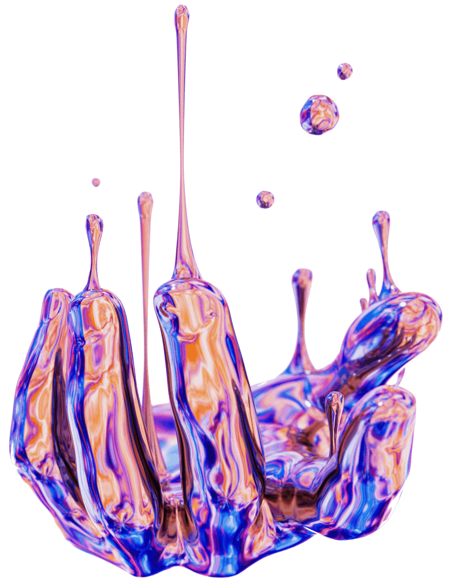

Stranger Things
Khám phá bộ sưu tập nghệ thuật số kỳ lạ sẽ thử thách cách bạn nhận thức về cuộc sống, vũ trụ, và mọi thứ.🤯
Lấy cảm hứng từ những bộ óc sáng tạo như Hideo Kojima, nghệ sĩ mang đến một bộ sưu tập nghệ thuật ngoài hành tinh khiến chúng ta suy ngẫm về vị trí của mình trong vũ trụ, chúng ta đang đi đâu, và liệu đám mây phát sáng của Night Vale là bạn hay thù.☁ Khám phá thêm các tác phẩm nghệ thuật tuyệt vời của họ bằng cách nhấp vào thẻ này.

'Nghệ thuật tinh tế' là gì? 'Nghệ thuật ghế' là gì?🪑 Ai đã ngồi vào chiếc ghế đó và đám mây đã làm gì với họ? Nghệ sĩ này đi qua các chiều không gian vào không gian siêu hình của ý thức vô thức. Khám phá thêm các tác phẩm nghệ thuật chấn động tâm trí của họ tại đây.

Hãy tưởng tượng một con bò như một hình cầu.🐮 Một con bò hình cầu là con bò điển hình. Vậy tại sao bò, và tất cả vật chất nói chung, lại không phải là hình cầu? Nghệ sĩ này dạy chúng ta về sự rối loạn và định lý thứ hai của nhiệt động lực học qua những hình học làm choáng ngợp. Thưởng thức nghệ thuật số của họ tại đây.